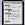

Vorherige Anweisungen wieder aufrufen
Um eine vorher aufgezeichnete Abfrage wieder aufzurufen und auszuführen, klicken Sie auf das Symbol für "Ablauffenster"  in der Symbolleiste, um das Ablauffenster zu öffnen.
Das Ablauffenster zeigt vorher ausgeführte Anweisungsfolgen, die im Ablaufpuffer für die aktuelle Verbindung gespeichert sind. Um die Anzahl der Anweisungen zu ändern, die im Ablaufpuffer gespeichert werden, wählen Sie das Register Sonstiges in Optionen.
Sie haben folgende Möglichkeiten:
-
Markieren Sie den Text, den Sie wiederverwenden wollen, und klicken Sie auf Go, um die Anweisung oder Anweisungsfolge im Eingabefenster anzuzeigen und nochmals auszuführen.
-
Klicken Sie auf das Aufwärtssymbol
 ,
um die vorherige Anweisungsfolge im Ablauffenster zu wählen
und im Eingabefenster anzuzeigen. Danach können Sie die
Befehle bearbeiten oder einfach auf Go klicken, um
sie nochmals auszuführen.
,
um die vorherige Anweisungsfolge im Ablauffenster zu wählen
und im Eingabefenster anzuzeigen. Danach können Sie die
Befehle bearbeiten oder einfach auf Go klicken, um
sie nochmals auszuführen.
-
Klicken Sie auf den Abwärtspfeil
 ,
um die nächste Anweisungsfolge im Ablauffenster anzuzeigen
und sie im Eingabefenster anzuzeigen, wo Sie den Befehl
bearbeiten können, oder klicken Sie auf Go
, um den Befehl nochmals auszuführen.
,
um die nächste Anweisungsfolge im Ablauffenster anzuzeigen
und sie im Eingabefenster anzuzeigen, wo Sie den Befehl
bearbeiten können, oder klicken Sie auf Go
, um den Befehl nochmals auszuführen.